10.3 Lists in Lists, Files
Chapter 2 introduces read-file, a function for reading an entire text file as a string. In other words, the creator of read-file chose to represent text files as strings, and the function creates the data representation for specific files (specified by a name). Text files aren’t plain long texts or strings, however. They are organized into lines and words, rows and cells, and many other ways. In short, representing the content of a file as a plain string might work on rare occasions but is usually a bad choice.
Add (require 2htdp/batch-io) to your definitions area.
For concreteness, take a look at the sample file in figure 66. It contains a poem by Piet Hein, and it consists of many lines and words. When you use the program
(read-file "ttt.txt")
Figure 66: Things take time
to turn this file into a BSL string, you get this:
"TTT \n \n Put up in a place\nwhere ...."
where the "\n" inside the string indicates line breaks.
The dots aren’t really a part of the result, as you probably guessed.
While it is indeed possible to break apart this string with primitive operations on strings, for example, explode, most programming languages—including BSL—support many different representations of files and functions that create such representations from existing files:
• One way to represent this file is as a list of lines, where each line is represented as one string:
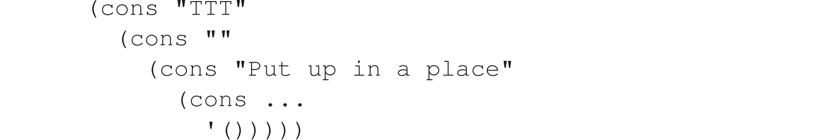
Here the second item of the list is the empty string because the file contains an empty line.
• Another way is to use a list of words, again each word represented as a string:
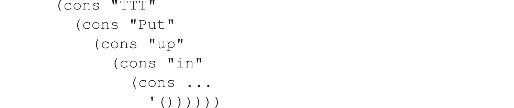
Note how the empty second line disappears with this representation. After all, there are no words on the empty line.
• And a third representation relies on lists of lists of words:
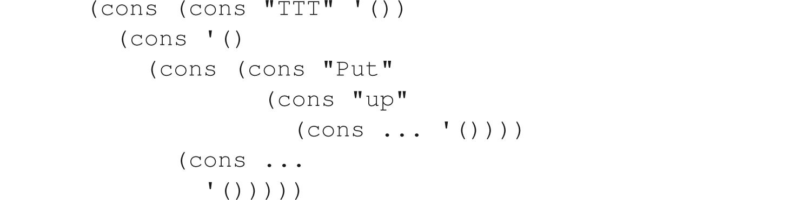
This representation has an advantage over the second one in that it preserves the organization of the file, including the emptiness of the second line. The price is that all of a sudden lists contain lists.
While the idea of list-containing lists may sound frightening at first, you need not worry. The design recipe helps even with such complications.
Before we get started, take a look at figure 67. It introduces a number of useful file reading functions. They are not comprehensive: there are many other ways of dealing with text from files, and you will need to know a lot more to deal with all possible text files. For our purposes here—teaching and learning the principles of systematic program design—they suffice, and they empower you to design reasonably interesting programs.
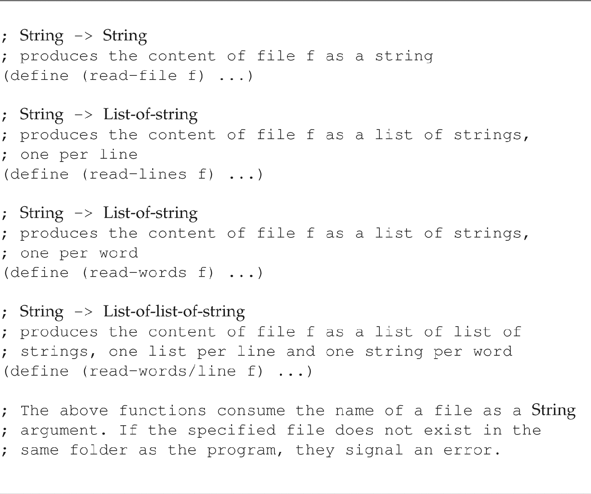
Figure 67: Reading files
Figure 67 uses the names of two data definitions that do not exist yet, including one involving list-containing lists. As always, we start with a data definition, but this time we leave this task to you. Hence, before you read on, solve the following exercises. The solutions are needed to make complete sense out of the figure, and without working through the solutions, you cannot really understand the rest of this section.
Exercise 171. You know what the data definition for List-of-strings looks like. Spell it out. Make sure that you can represent Piet Hein’s poem as an instance of the definition where each line is represented as a string and another instance where each word is a string. Use read-lines and read-words to confirm your representation choices.
Next develop the data definition for List-of-list-of-strings. Again, represent Piet Hein’s poem as an instance of the definition where each line is represented as a list of strings, one per word, and the entire poem is a list of such line representations. You may use read-words/line to confirm your choice. 
As you probably know, operating systems come with programs that measure files. One counts the number of lines, another determines how many words appear per line. Let us start with the latter to illustrate how the design recipe helps with the design of complex functions.
The first step is to ensure that we have all the necessary data definitions. If you solved the above exercise, you have a data definition for all possible inputs of the desired function, and the preceding section defines List-of-numbers, which describes all possible inputs. To keep things short, we use LLS to refer to the class of lists of lists of strings, and use it to write down the header material for the desired function:
; LLS -> List-of-numbers
; determines the number of words on each line
(define (words-on-line lls) '())
We name the functions words-on-line because it is appropriate and captures the purpose statement in one phrase.
What is really needed, though, is a set of data examples:
(define line0 (cons "hello" (cons "world" '())))
(define line1 '())
(define lls0 '())
(define lls1 (cons line0 (cons line1 '())))
The first two definitions introduce two examples of lines: one contains two words, the other contains none. The last two definitions show how to construct instances of LLS from these line examples. Determine what the expected result is when the function is given these two examples.
Once you have data examples, it is easy to formulate functional examples; just imagine applying the function to each of the data examples. When you apply words-on-line to lls0, you should get the empty list back because there are no lines. When you apply words-on-line to lls1, you should get a list of two numbers back because there are two lines. The two numbers are 2 and 0, respectively, given that the two lines in lls1 contain two and no words each.
Here is how you translate all this into test cases:
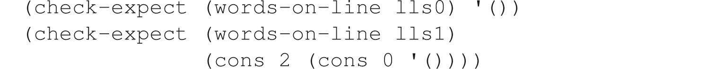
By doing it at the end of the second step, you have a complete program, though running it just fails some of the test cases.
The development of the template is the interesting step for this sample problem. By answering the template questions from figure 52, you get the usual list-processing template immediately:
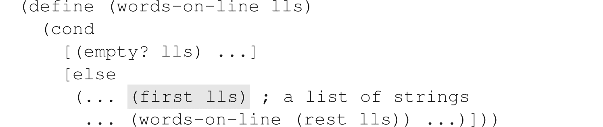
As in the preceding section, we know that the expression (first lls) extracts a List-of-strings, which has a complex organization, too. The temptation is to insert a nested template to express this knowledge, but as you should recall, the better idea is to develop a second auxiliary template and to change the first line in the second condition so that it refers to this auxiliary template.
Since this auxiliary template is for a function that consumes a list, the template looks nearly identical to the previous one:
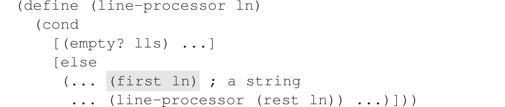
The important differences are that (first ln) extracts a string from the list, and we consider strings as atomic values. With this template in hand, we can change the first line of the second case in words-on-line to
… (line-processor (first lls)) …
which reminds us for the fifth step that the definition for words-on-line may demand the design of an auxiliary function.
Now it is time to program. As always, we use the questions from figure 53 to guide this step. The first case, concerning empty lists of lines, is the easy case. Our examples tell us that the answer in this case is '(), that is, the empty list of numbers. The second case, concerning cons, contains several expressions, and we start with a reminder of what they compute:
• (first lls) extracts the first line from the non-empty list of (represented) lines;
• (line-processor (first lls)) suggests that we may wish to design an auxiliary function to process this line;
• (rest lls) is the rest of the list of line; and
• (words-on-line (rest lls)) computes a list of words per line for the rest of the list. How do we know this? We promised just that with the signature and the purpose statement for words-on-line.
Assuming we can design an auxiliary function that consumes a line and counts the words on one line—let’s call it words#—it is easy to complete the second condition:
This expression conses the number of words on the first line of lls onto a list of numbers that represents the number of words on the remainder of the lines of lls.
It remains to design the words# function. Its template is dubbed line-processor and its purpose is to count the number of words on a line, which is just a list of strings. So here is the wish-list entry:
; List-of-strings -> Number
; counts the number of words on los
(define (words# los) 0)
At this point, you may recall the example used to illustrate the design recipe for self-referential data in chapter 9. The function is called how-many, and it too counts the number of strings on a list of strings. Even though the input for how-many is supposed to represent a list of names, this difference simply doesn’t matter; as long as it correctly counts the number of strings on a list of strings, how-many solves our problem.
Since it is good to reuse existing functions, you may define words# as
(define (words# los)
(how-many los))
In reality, however, programming languages come with functions that solve such problems already. BSL calls this function length, and it counts the number of values on any list of values, no matter what the values are.
You may wish to look over the list of functions that come with BSL. Some may look obscure but may become useful in one of the upcoming problems. Using such functions saves your time, not ours.
Figure 68 summarizes the full design for our sample problem. The figure includes two test cases. Also, instead of using the separate function words#, the definition of words-on-line simply calls the length function that comes with BSL. Experiment with the definition in DrRacket and make sure that the two test cases cover the entire function definition.
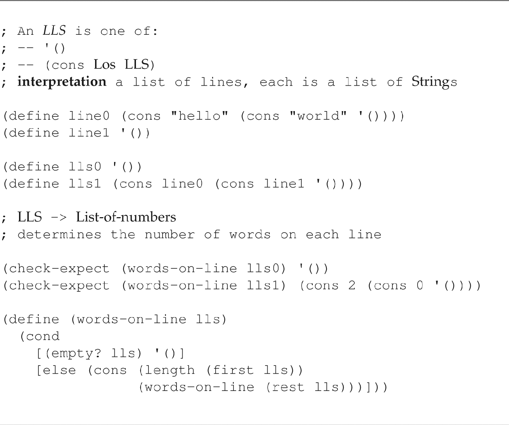
Figure 68: Counting the words on a line
With one small step, you can now design your first file utility:
; String -> List-of-numbers
; counts the words on each line in the given file
(define (file-statistic file-name)
(words-on-line
(read-words/line file-name)))
It merely composes a library function with words-on-line. The former reads a file as a List-of-list-of-strings and hands this value to the latter.
This idea of composing a built-in function with a newly designed function is common. Naturally, people don’t design functions randomly and expect to find something in the chosen programming language to complement their design. Instead, program designers plan ahead and design the function to the output that available functions deliver. More generally still and as mentioned above, it is common to think about a solution as a composition of two computations and to develop an appropriate data collection with which to communicate the result of one computation to the second one, where each computation is implemented with a function.
Exercise 172. Design the function collapse, which converts a list of lines into a string. The strings should be separated by blank spaces (" "). The lines should be separated with a newline ("\n").
Challenge When you are finished, use the program like this:
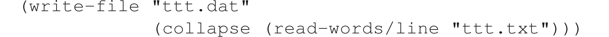
To make sure the two files "ttt.dat" and "ttt.txt" are identical, remove all extraneous white spaces in your version of the T.T.T. poem.
Exercise 173. Design a program that removes all articles from a text file. The program consumes the name n of a file, reads the file, removes the articles, and writes the result out to a file whose name is the result of concatenating "no-articles-" with n. For this exercise, an article is one of the following three words: "a", "an", and "the".
Use read-words/line so that the transformation retains the organization of the original text into lines and words. When the program is designed, run it on the Piet Hein poem.
Exercise 174. Design a program that encodes text files numerically. Each letter in a word should be encoded as a numeric three-letter string with a value between 0 and 256. Figure 69 shows our encoding function for single letters. Before you start, explain these functions.
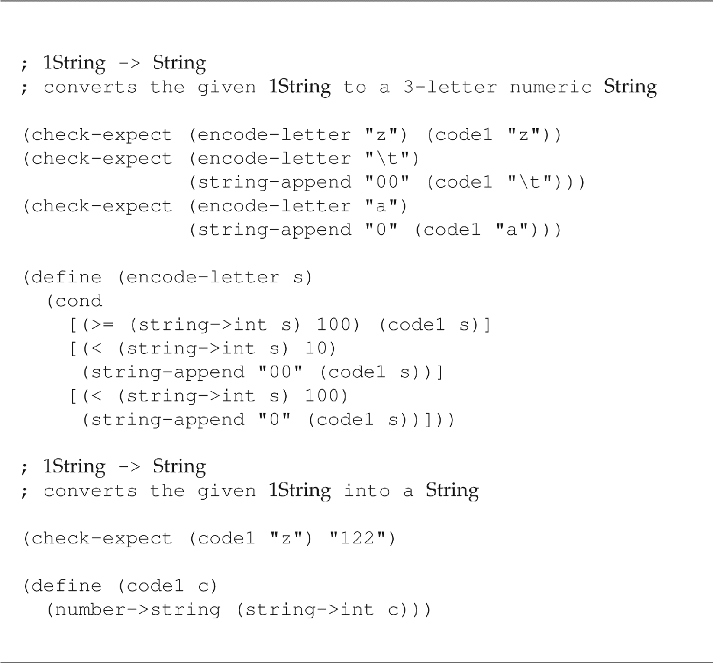
Figure 69: Encoding strings
Hints (1) Use read-words/line to preserve the organization of the file into lines and words. (2) Read up on explode again.
Exercise 175. Design a BSL program that simulates the Unix command wc. The purpose of the command is to count the number of 1Strings, words, and lines in a given file. That is, the command consumes the name of a file and produces a value that consists of three numbers.
Exercise 176. Mathematics teachers may have introduced you to matrix calculations by now. In principle, matrix just means rectangle of numbers. Here is one possible data representation for matrices:
; A Matrix is one of:
; -- (cons Row '())
; -- (cons Row Matrix)
; constraint all rows in matrix are of the same length
; A Row is one of:
; -- '()
; -- (cons Number Row)
Note the constraints on matrices. Study the data definition and translate the two-by-two matrix consisting of the numbers 11, 12, 21, and 22 into this data representation. Stop, don’t read on until you have figured out the data examples.
Here is the solution for the five-second puzzle:
(define row1 (cons 11 (cons 12 '())))
(define row2 (cons 21 (cons 22 '())))
(define mat1 (cons row1 (cons row2 '())))
If you didn’t create it yourself, study it now.
The function in figure 70 implements the important mathematical operation of transposing the entries in a matrix. To transpose means to mirror the entries along the diagonal, that is, the line from the top-left to the bottom-right.
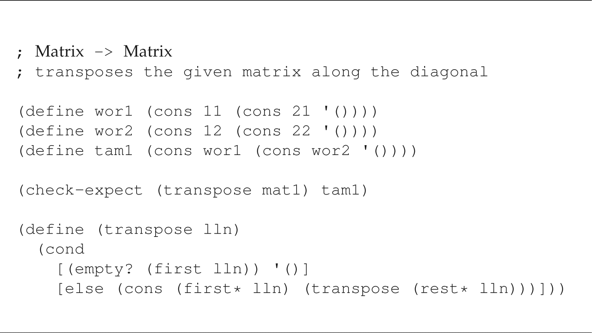
Figure 70: Transpose a matrix
Stop! Transpose mat1 by hand, then read figure 70. Why does transpose ask (empty? (first lln))?
The definition assumes two auxiliary functions:
• first*, which consumes a matrix and produces the first column as a list of numbers; and
• rest*, which consumes a matrix and removes the first column. The result is a matrix.
Even though you lack definitions for these functions, you should be able to understand how transpose works. You should also understand that you cannot design this function with the design recipes you have seen so far. Explain why.
Design the two wish-list functions. Then complete the design of transpose with some test cases.